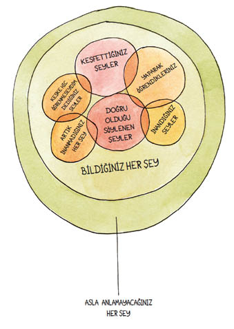
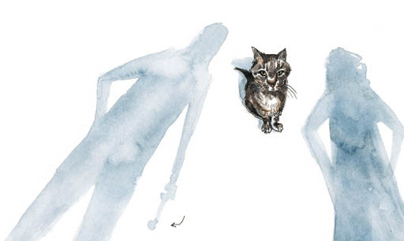

23
Her arayış bir yolculuk, her yolculuk bir hikayedir ve her hikayede de bir ders vardır.
Hikayemizden alınması olası yedi dersi aşağıya sıralıyorum:
1. Teknoloji müthiş bir şey. Gelecek onun. Bilgisayarlar! GPS! Kedi kameraları! Bir dahaki sefere pizza ısmarlayan, gömlekleri ütüleyen ve şok tabancasına dönüşen zımbırtıdan al.
2. Teknolojiye güvenme. Bazı şeyler için iyi tabii, ama bizim hikayemizde en faydalı ve sonuç getirici davranış, komşularımızla yüz yüze konuşmak oldu. Gelecekteki araştırmalarımız için en modası geçmiş teknolojiyi öneriyoruz: gırtlak-dil-çene mekanizması.
3. Bir zamanlar depresyondaydım, ama dünyaya açıldım ve depresyondan kurtuldum. Artık yalnızca kafadan çatlağım.
4. Kafadan çatlaklık kişiye göre değişir.

5. Er ya da geç herkes kedisever olur. İnanmazsanız Wendy’ye sorun.
6. Kedinizi asla tanıyamazsınız. Aslında, hiç kimseyi istediğiniz yakınlıkta tanımanız mümkün değildir.
7. Ama bunda bir sorun yok, sevmek daha iyidir.
Hanemizdeki olaylar yatıştı. Koltuk değnekleri nihayet ortadan kalktı. Wendy temelli yanıma taşındı. Tibby de artık başını alıp gitmekle ilgilenmez oldu. Hâlâ istediği gibi girip çıkıyordu eve, ama asla uzun süre ortadan kaybolmuyordu. Genellikle salınarak bahçedeki koltuklardan birine gidiyor, etrafına bakınıp esniyor ve sandalyenin altında geriniyordu. Gözlerini kapatıp saatlerce kestiriyor, ne olduklarını asla öğrenemeyeceğimi artık kabullendiğim rüyalar görüyordu. Evin tek kedisi olmaya yavaş yavaş alıştı; kucakların tek sakini, bebekçe konuşmaların ve ilginin tek odak noktası oydu. Hatta bu durum hoşuna gidiyormuş gibiydi.
Yemeklerde düzenli olarak Friskies sunuluyordu.
Wendy kısa bir süre önce iki yavru kedi istediğini açıkladı. Barınaktan alırız dedi. On dört gibi ileri ve titrek bir yaştaki Tibby’nin de genç kedi dostları olurdu.
Gözleri parlayarak, “İki kedi!” diye bağırdı. “Lütfen?”
“Bunu gerçekten istiyor musun?” diye sordum.
Sevgi, kıskançlık ve gururdan yoksun bir büyülenmişlikle dolu bir yolculuğa çıkmak üzere olduğunu hatırlattım ona.
Wendy beni bununla başa çıkabileceğine ikna etti. Evet, yavru kedilerini asla tanıyamazsın, diye kabullendi. Ama Operasyon: Tibby’nin İzinde sayesinde hiçbir şey öğrenmediyse, güvenin olağanüstü bir şey olduğunu öğrenmişti.
“Ne olursa olsun beni seveceklerine güveniyorum,” dedi. Yüzünde yeni bir kedi sahibinin bütün umudunu, hevesini ve gelecekteki kalp kırıklıklarını gördüm.
8. Güven iyidir ama GPS’i de aklınızdan çıkarmayın.
